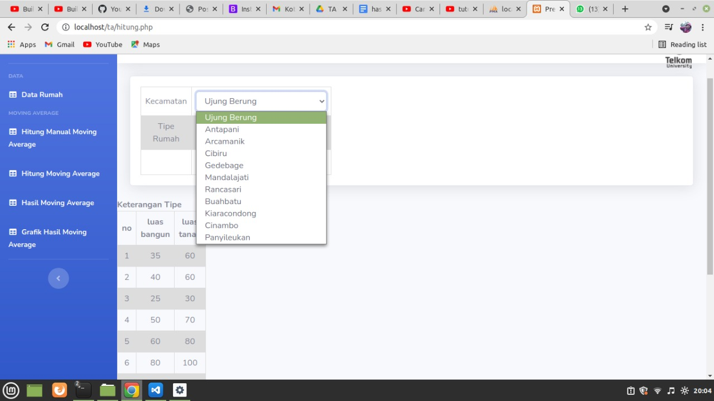
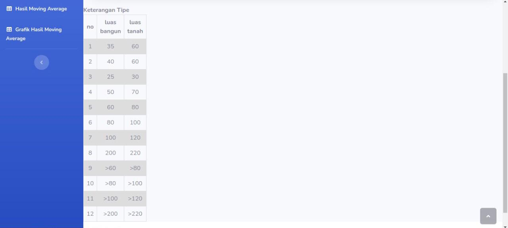
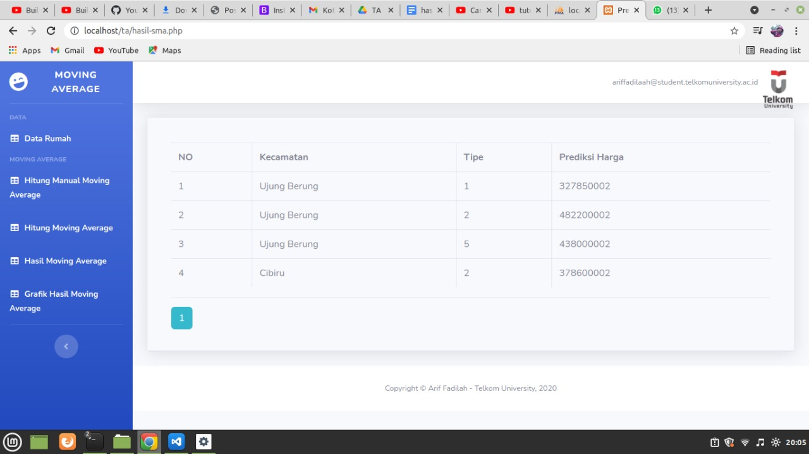
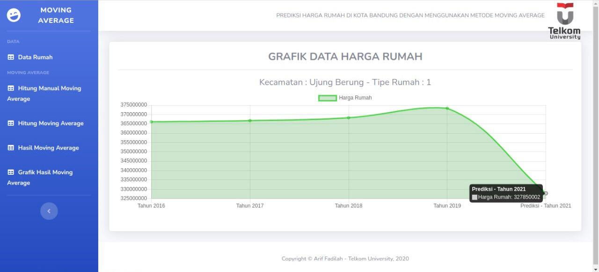

Halaman utama
Final Project TA
Tujuan utama dari aplikasi ini yaitu dapat mengetahui informasi harga rumah untuk tahun selanjutnya yang
berada di kota Bandung bagian timur. Dengan menggunakan berbasis website dengan metode Moving Average
memudahkan user mengetahui harga rumah untuk tahun selanjutnya
Data Rumah
Pada menu ini memberikan informasi harga rumah di perkecamatan dan pertipe yang sudah ditentukan dan berupa
harga rumah tahun lalu dan dapat dibandingkan
Hitung harga rumah yang diprediksikan
Memilih kecamatan
Tipe rumah

memilih harga rumah di kecamatan dan tipe yang sudah ditentukan dan dapat memilih harga rumah yang diingin
diprediksikan
Hasil harga rumah yang diprediksikan
Hasil prediksi
contoh jika hasil mendapatkan prediksi harga rumah yang dipilih oleh customer

hasil prediksi di grafikkan dengan harga yang tahun sebelumnya jika harga prediksi harga rumah bisa naik atau tidak
Technologies:
- - PHP
- - Bootstrap
- - Javascript
- - HTML/CSS
- - Mysql
Untuk mendownload atau lihat hasil bisa di cek untuk link githubnya
KLIK LINK DIBAWAH INI
FINAL PROJECT
Copyright © 2021 by Arif Fadilah